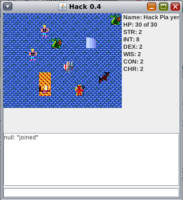

A Project Darkstar Game
FAQ
Click on a link below to take you to a specific topic, or just start
browsing.
General
Building and Running
Game Design
Gameplay
Other
General Questions
|
What is Hack?
Hack is a fully-working small 2D dungeon crawler game
with a playable client and server. The game is very similar
to a graphical,
generic Rogue-like
game. Right now it's a bit light on game-specific logic,
but this is because our primary goals was to develop all the
application logic needed, such as dealing with clients,
having characters move, processing messages, etc. As a part
of this goal, we designed the system to be highly extensible
so later developers could add their own improvements. Some
of the current features are:
- Client login and hooks for passwords and authentication
- Character classes and stats
- A Lobby where players can choose which dungeon to visit
- A configurable dungeon, creature and NPC system where developers can easily design their own dungeons.
- A minimal combat system where the player can kill and be killed by creatures.
- A 2D graphical client for the player (screen shot below) and a large sprite map for extending the game with new player classes and objects.

|
|
Where did Hack come from?
Hack was initially built as an internal game as a part of
Project
Darkstar (PDS). Now that PDS has been open sourced,
Hack has also been released under the Creative Commons
license and is being developed as its own game.
|
|
What purpose does Hack
serve?
Hack has several goals:
- First, we want Hack to be an exciting, playable game
and a place for developers to try new features. One of
the most rewarding things about game development is being
able to play the result (and enjoy it!). Development
direction will be driven by the community and based on
what features people would like to see.
We want Hack to serve as a great example of how to
develop RPG-like games with Project Darkstar (PDS). The
first part of this goal includes writing design
documents to explain the system and adding lots of
documentation in the code about the design choices
involved.
The second part of this goal is to make it easier for
new developers on the project to get started quickly. As
a part of this, we want to keep a current list of
requested features so new developers can easily see what
things they might want to work on. As a second part, we
want to be open to new ideas, and let developers freely
test out features that they think would be interesting.
Our third goal is be an exmplar PDS community member
by providing real-world game data for testing PDS itself,
and documenting all PDS issues, performance bottlenecks
and enhancement-requests. If we are suceeding in the
first two goals, the first part of this goal should
require no effort. Given that this project depends on
PDS, we want to provide meaningful data about PDS
performance, which lets PDS developers beter tune the
system.
The second part of this goal requires active
participatiaon and analysis of Hack performance. As new
features are added, Hack will undoubtedly run into issues
and performance bottlenecks. As a part of this, we want
to be active in documenting these and letting the PDS team
know about anything that could be improved or added to
their system to alleviate them.
|
|
If I add feature X, can I
use the code again later in a different project?
Yes, and not only that, you can use all the other code in
the Hack project as well. Hack was released under the
Creative Commons license for this very purpose. Often when
new game developers are just starting out, they want to try
implementing some cool feature or gameplay option, but the
minimal programming investment to get the game running is so
large, they give up before finishing. We would like to see
new developers try programming with Hack first and adding the
things they want, and then taking their new game-programming
knowledge and their code to develop their own games. (or they can keep working on Hack too  ) )
|
Questions on Building and Running
|
How do I get the source?
Hack is an open-source game. You can download the source
from our SVN repository with the following
command:
svn checkout https://darkstar-hack.dev.java.net/svn/darkstar-hack/trunk darkstar-hack --username username
where username is your java.net username, or you
can check it out anonymously using the username guest
|
|
How do I build the source?
We
use Apache
Maven for our project. If you have the project checked
out, you can type mvn compile at the root directory
and this will build the source for all four of the subprojects.
|
|
Maven says it's unable to download the artifact?
If you're seeing something like the following error:
[INFO] ------------------------------------------------------------------------
[ERROR] BUILD ERROR
[INFO] ------------------------------------------------------------------------
[INFO] Failed to resolve artifact.
GroupId: com.projectdarkstar.example.hack
ArtifactId: hack
Version: 1.0-SNAPSHOT
Reason: Unable to download the artifact from any repository
com.projectdarkstar.example.hack:hack:pom:1.0-SNAPSHOT
from the specified remote repositories:
central (http://repo1.maven.org/maven2),
java.net (http://download.java.net/maven/2/),
games-darkstar.snapshots (https://games-darkstar.dev.java.net/nonav/snapshots)
Then it might be due an old version of maven. We've seen
this issue with the default version of Maven that ships
with OS X. Try downloading the latest version and then
try to build it. If this doesn't work, please
email us about the issue and attach the error you're
seeing, as we want the code to "just work" right out of
the box.
|
|
What are all these subprojects?
We have divided the code base into four logically
separate Maven subprojects:
- hack-client:
The client project
encompasses all the client-side code for processing
messages and displaying the game state in a GUI.
- hack-ai:
The ai project is a
headless client that connects to the server, creates a
character, then joins a game and begins randomly
wandering around. This project's runtime configuration
lets you specify how many AI clients to connect, which
is useful for stress testing how many clients a
particular server configuration can handle before
performance problems set in. The AI project has a
dependency on parts of the client project for its
message processing.
- hack-server:
The server is where all
the server-side code for manipulating game state and
handling client messages lives. Currently, the server
also has knowledge of parts of the GUI, notably the
tileset, and the client can request these informatin
from the server.
- hack-shared:
The shared project is
the only non-runnable project in the group. It contains
all the shared code between the client project and
server. It also contains all the messaging and command
classes, along with utilities for encoding the various
game commands into network-ready data types.
|
|
How do I run this?
We have application run commands in the Maven pom.xml so
you can start things from the command line as follows:
- hack-client: mvn process-test-resources -Ptest-run
- hack-ai: mvn process-test-resources -Ptest-run
- hack-server: mvn process-test-resources -Psingle-node-server
The Hack client and ai projects can take optional
parameter hack.host to specificy which machine to
connect to. The ai project also has the optional
parameter ai.clients to specify how many clients
should connect from the new JVM. These properties should
be specified on the command line using the
"-Dproperty=value" syntax.
|
Design and Development Questions
|
I don't know Project Darkstar very well. Can I still contribute?
Most definitely. We have plenty of client-side and
server-side projects that require no experience with how to
program in the Project Darkstart environment. Of course,
once you start working with the code base, you're bound to
pick up how it's done. If you have a specific project you
have in mind that you're not sure about, feel free to email
the dev mailing list about it. We're always happy to help
developers get started.
|
|
I want to add feature X, what do I do?
Email us! We're always looking for new ideas and featues
to add. Also, check out the list
of current projects and
issues to see if someone has already proposed what
you're suggesting. You might be able to work together with
that person, or you could create another implementation of
it so we have some pluggable behavior.
|
|
I'm having trouble
figuring out how all this code works. Can you explain what
X is doing?
You might want to check out
the design document to see if that
helps answer your question. If not feel free to email the
dev mailing list. We appreciate any feedback on the design
document too as it's important that the project have a clear
statement of how the code interacts. If you think that some
part of the code would be better restructured, you're
welcome to suggest that too.
|
Gameplay Questions
|
My character won't move!
The key commands are i,j,k,l.
|
Other Questions
|
Why did you make a game
with such outdated graphics?
Two reasons: we're primarily game and systems
programmers, so we're not very good at art design and
graphics. (Shameless plug: if you're a graphic designer, or
want to try writing a cool GUI, this is your chance.) More
importantly, we wanted to get the core gameplay implemented
first. It's more useful to have a fun game with old
graphics, than a boring game with good graphics.
|

Hack is a proud member of the Project Darkstar Game Community
|